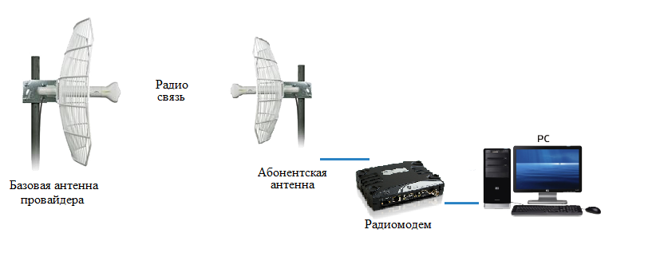

Радиоканал – используют для организации связи между офисом или квартирой и опорной точкой радиосети провайдера.
С помощью этой технологии к Интернету можно подключить как индивидуальных пользователей, так и локальные сети. Для этого у абонента устанавливается радиомодем, который подключается к сетевой карте его компьютера или к хабу/маршрутизатору (в случае подключения локальной сети). Радиомодем соединен с направленной антенной, установленной на крыше здания. Антенна абонента направляется на базовую станцию провайдера.
Схема подключения

Основные преимущества Радиоканала:
- быстрая инсталляция оборудование (можно быстро перенести и подключить в другом месте);
- подключение по радиоканалу особенно актуально, если объект который нужно подключить находится в труднодоступных местах или в промзонах, где прокладка кабельных линий бывает невозможна.
- доступ в сеть интернет по радиоканалу со скоростью 100 Мбит/с - не предел, при этом, качество связи не уступает подключению по кабельному каналу (в зависимости от оборудования).
Основные недостатком Радиоканала:
- большинство радиооборудования беспроводных сетей работает в диапазоне частот 2,4 ГГц. Такие волны распространяются вдоль прямой линии, соединяющей антенны. Поэтому радиоканал должен быть организован при условии прямой видимости между абонентской антенной и антенной провайдера. На практике направленные антенны обеспечивают дальность связи до 30 км;
- скорость канала определяется конкретно в месте подключения и зависит от многих факторов, таких как модель устанавливаемого оборудования, расстояние до базовой станции,"загрязненность" радиоэфира, погоды.